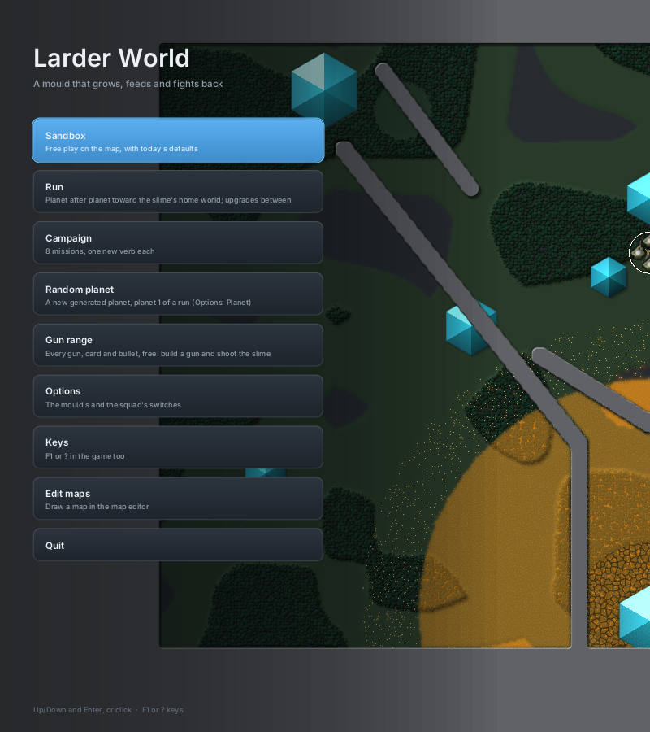
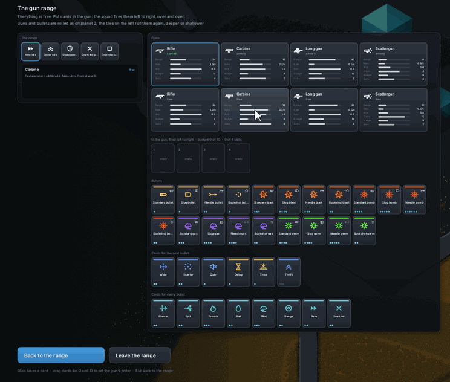
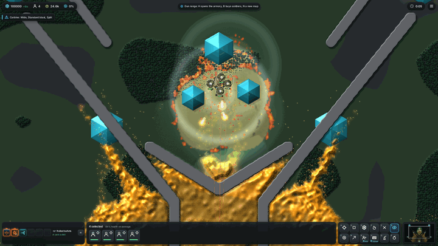

<title>Gun Range</title>
<meta name="claude:viewport-fit-sides" content="cover">
<link rel="stylesheet" href="https://fonts.googleapis.com/css2?family=Space+Grotesk:wght@500;700&family=Inter:wght@400;600&display=swap">
<style>
/* Layout: one column; each step a heading, a picture and its counts, then the keys. */
:root { --bg:#f2f3ef; --fg:#1c2023; --muted:#5b6366; --panel:#ffffff; --line:#d7d9d1; --accent:#5d7f3a;
  --display:"Space Grotesk",system-ui,sans-serif; --body:"Inter",system-ui,sans-serif; }
@media (prefers-color-scheme: dark) { :root:not([data-theme="light"]) { --bg:#121516; --fg:#e6e9e5; --muted:#99a2a2; --panel:#1a1e20; --line:#2b3134; --accent:#a3c97a; color-scheme:dark } }
:root[data-theme="dark"] { --bg:#121516; --fg:#e6e9e5; --muted:#99a2a2; --panel:#1a1e20; --line:#2b3134; --accent:#a3c97a; color-scheme:dark }
body { background:var(--bg); color:var(--fg); font-family:var(--body); line-height:1.55; margin:0; }
main { max-width:1000px; margin:0 auto; padding-block:32px 48px; padding-left:max(16px, env(safe-area-inset-left, 0px)); padding-right:max(16px, env(safe-area-inset-right, 0px)); display:grid; gap:28px; }
h1, h2 { font-family:var(--display); text-wrap:balance; margin:0; }
h1 { font-size:2rem; } h2 { font-size:1.25rem; }
p, ul { margin:0; max-width:68ch; }
ul { padding-left:1.2em; }
li + li { margin-top:4px; }
.muted { color:var(--muted); }
section { display:grid; gap:12px; min-width:0; }
.pair { display:grid; grid-template-columns:repeat(auto-fit, minmax(300px, 1fr)); gap:12px; align-items:start; }
figure { margin:0; background:var(--panel); border:1px solid var(--line); border-radius:6px; overflow:hidden; }
figure img { display:block; width:100%; height:auto; }
figcaption { padding:10px 14px; display:flex; flex-wrap:wrap; gap:6px 14px; align-items:baseline; }
.tag { font-family:var(--display); font-weight:700; color:var(--accent); }
.note { color:var(--muted); }
table { border-collapse:collapse; width:100%; font-size:.95rem; }
td, th { text-align:left; padding:6px 10px; border-bottom:1px solid var(--line); vertical-align:top; }
th { font-family:var(--display); }
kbd { font-family:var(--display); font-weight:700; border:1px solid var(--line); border-radius:4px; padding:0 5px; background:var(--panel); }
.wrap { overflow-x:auto; }
</style>
<main>
  <header style="display:grid;gap:8px">
    <h1>The gun range</h1>
    <p class="muted">You asked for a test environment where you can play with the guns, cards and bullets. Double-click <code>play.cmd</code> and pick <b>Gun range</b> on the start menu. Everything there is free and nothing has to be unlocked. You build a gun in the armory, then shoot the slime with it on the sandbox map.</p>
  </header>

  <section>
    <h2>1. Pick Gun range on the start menu</h2>
    <div class="pair">
      <figure><figcaption><span class="tag">Start menu</span><span class="note">The new row sits under Random planet</span></figcaption></figure>
      <div style="display:grid;gap:10px">
        <p>The armory opens first. It is the run's shop page with everything free:</p>
        <ul>
          <li><b>Guns:</b> one of each kind (rifle, carbine, long gun, scattergun) in the top row, and a rolled one of each kind on the rack below. Click a rack gun to swap it in; your old one goes onto the rack.</li>
          <li><b>Bullets:</b> every payload (plain, blast, bomb, gas, germ) in every set (standard, slug, needle, buckshot). Standard ones are exact; the others are rolled.</li>
          <li><b>Cards:</b> every "next bullet" card and every "always" card.</li>
          <li><b>Tiles on the left:</b> New rolls, Deeper rolls and Shallower rolls (rolled as on planet 3 to start), Empty the gun, Empty the bag.</li>
        </ul>
        <p>Click a card to put it in the gun, or drag it onto a slot. You can take the same card as many times as you like.</p>
      </div>
    </div>
  </section>

  <section>
    <h2>2. Build a gun</h2>
    <figure><figcaption><span class="tag">Armory</span><span class="note">Rack carbine swapped in, then Standard blast, Wide in front of it, Split third: 3 of 6 slots, budget 7 of 8</span></figcaption></figure>
  </section>

  <section>
    <h2>3. Back to the range and shoot</h2>
    <figure><figcaption><span class="tag">The round</span><span class="note">Fork, shape C slime, 4 soldiers standing their ground, 5 to 11 s: 103 shots by 11 s, 816 walkers killed (slime 25,000 down to 24,208)</span></figcaption></figure>
    <p class="muted">The loadout strip at the bottom left shows the three cards. The pale discs are the blast craters, which the slime avoids, and the orange rings are plants they set on fire.</p>
  </section>

  <section>
    <h2>Keys in the range</h2>
    <div class="wrap"><table>
      <tr><th>Key</th><th>What it does</th></tr>
      <tr><td><kbd>H</kbd></td><td>Opens the armory over the round and pauses it. Shift+H and Ctrl+H do the same here.</td></tr>
      <tr><td>Back to the range, or <kbd>Esc</kbd></td><td>Closes the armory. Every squad gets the new gun and cards, and the same round carries on.</td></tr>
      <tr><td><kbd>B</kbd></td><td>Buys a soldier. The bank starts at 100,000, so you won't run out.</td></tr>
      <tr><td><kbd>N</kbd></td><td>A new map, still with your gun.</td></tr>
      <tr><td>Restart (Esc menu)</td><td>The same map again, still with your gun.</td></tr>
      <tr><td>Leave the range</td><td>Back to the start menu. The gun stays built for next time.</td></tr>
    </table></div>
    <p class="muted">There is no time limit, and the clock counts up. Nothing here is balanced; it is only for trying things out.</p>
  </section>

  <p class="muted">Filmed with <code>larder-world look=DIR range=7 menu=shop hand=stand centre=256,140,4.5 screen=1600x900</code> and <code>drag=Carbine&gt;Carbine/Standard blast&gt;1/Wide&gt;1/Split&gt;3/go</code> on software Vulkan. In the film the round runs on while the armory is open (a few hundredths of a second); in the game it is paused.</p>
</main>
